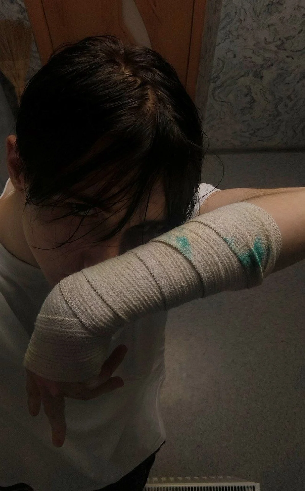

два кадра.
одна история.
errorclub / artist 01кислотный архив
моралофобия
Шум, который светится в темноте.
first signal / 01
КР0СС0ВКИ
Подключаем звук…SoundCloud ↗
На связи
01 доступнаОстальные площадки появятся здесь, когда будут доступны.